In this section, we are going to analyze the data we found about people from the range of 14 years old to 20 years old.
We chose to put people of this age range into only one category for two reasons. First, 14 is the age of the youngest respondent we had on our survey, and we chose to stop the category at 20 to be able to analyze the answer of those people as only one generation (gen Z). The second reason is that from the 125 persons who answered our survey, 47 of them were in this category. To keep the different groupments of age quite equal, we made the arbitrary choice to stop at 20.
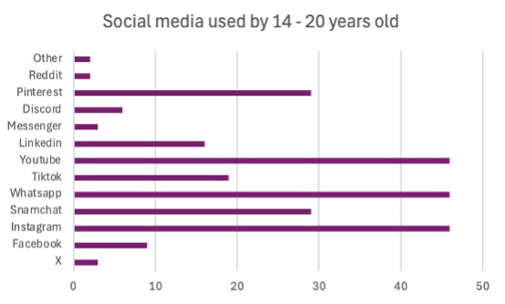
As we can see on the graph, our results show that the most equally used platforms are YouTube, WhatsApp and Instagram, while the ones with the lowest utilization are Reddit and X. As we can notice, Snapchat and Pinterest are also widely used. We compared our findings with the results published about American and Austrian teens.
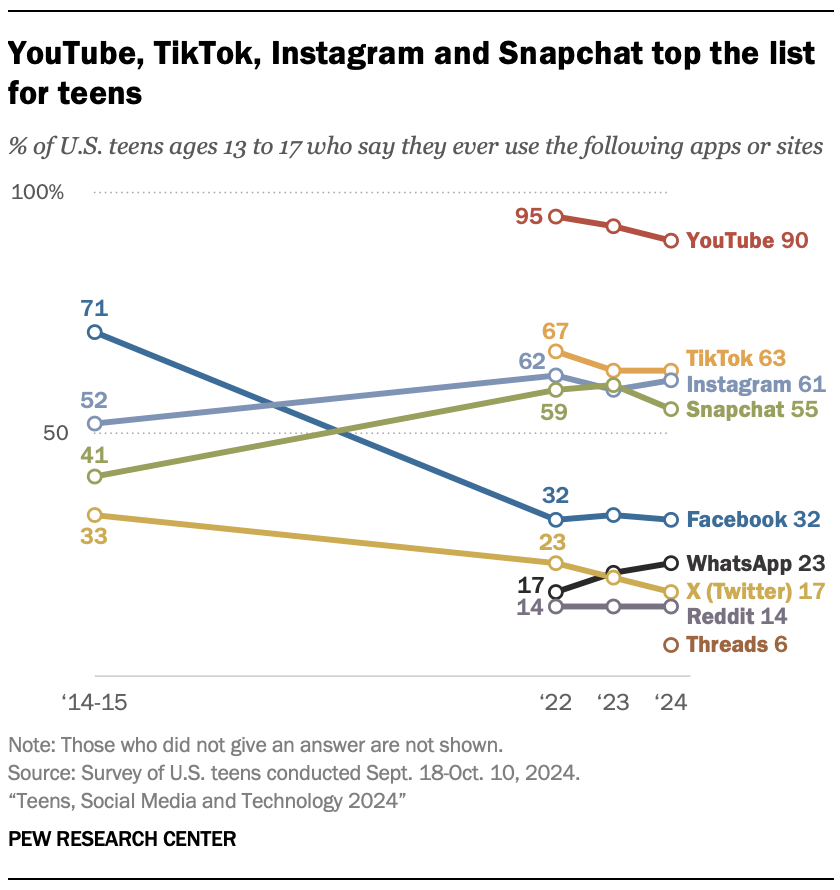
As we can see on this graph from the Pew Research center, YouTube and Instagram are also amongst the most used social media platform by US teens, while Reddit and X (Twitter) are by the lowest — we didn't include Threads on our research, that’s why we don’t use it in these comparisons. In Austria, WhatsApp and YouTube are the most important social media out of the 6 the article mentions, and TikTok and Instagram are the last – Teams is the very last, but once again there is no point of comparison with our finding. We must precise that those two “less used” social media in Austria are still used by more than the half of the interrogated population. We concluded that our results are quite accurate if we consider that most of the 14 – 20 years old who answered our survey are Europeans.
In comparison with older respondent from our research, we found that applications as WhatsApp are widely used in the different generations, while some as YouTube, Instagram and TikTok are most used by younger generations (this category and 20 – 30 years old). We can also mention that the use of Pinterest seems rather specific to the younger generation.
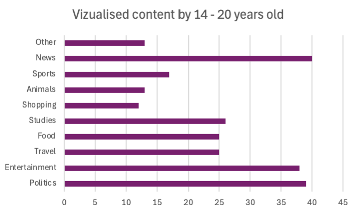
We are now going to speak about the type of content watched by the 14 – 20 years old of our survey on social media. The first thing to notice is the predominance of the number of people using those platforms to check on the news, category that is closely followed by politics and then entertainment. This is a European tendency, as said by the Eurostat website : “in 2025, 65% of young people read news online. In 2025, 24% of young people used the internet for civic or political participation.”
When comparing the results of this question between the different generations, we found that watching news and political content on social media seems to be a common point. In the case of entertainment content, the people who watch it the most are the 14 – 20 years old and the 50+ years old, which we may link to free time or relaxation for students and retired persons. And in the case of content linked to studies, it appears more with the younger generation and the generation of their parents, which is probably linked to the status as students in reals life and the parents helping.
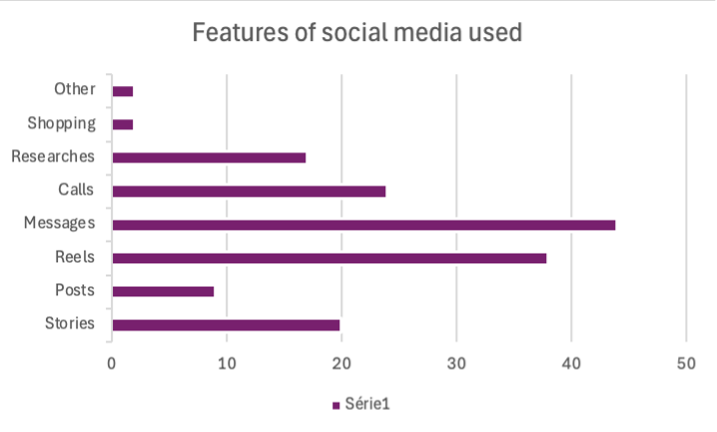
Regarding the features used, messages is the most important across all the generations. As the generation just above them this generation has a large preference for reels, scrolling and stories, but what’s interesting is that on the contrary of them the don’t really use posts and they widely use the call function, as the two older generations (40 – 50 and 50+ years old).
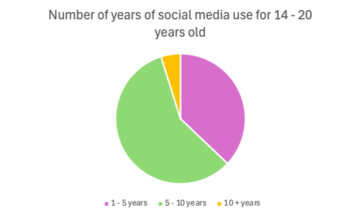
When it comes to the number of years of social media use for 14 – 20 years old, the first thing to notice is that for quite two thirds of them, it’s been between 5 and 10 years that they first used it. To understand this result accurately, we have to precise that when people answering to the survey precised different times for their first used of diverse social medias and those dates weren’t in the same category, we counted +1 answer in each category. For people who have lived maximum 20 years, using social media for 5 years means a quarter of their life, and ten years means half of it, which is big, and means they began using it as children. We linked that to the fact that gen Z is the generation that grew up within the era of social media.
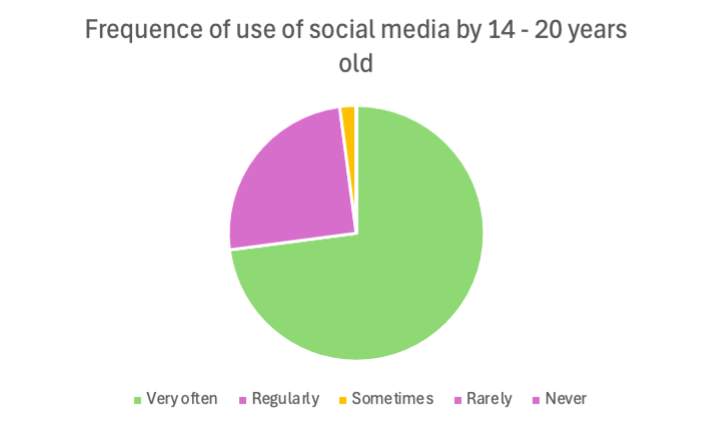
Finally, how often do 14 -20 years old use social media. The results are extremely clear: nearly three quarters of the respondent uses them very often, while none are rarely or never using them. It shows how common it is in their everyday life – “In 2025, 98% of young people aged 16-29 years in the EU used the internet every day, compared with 90% of the total population.”
(Eurodata) - especially when it concerns social life. When we compared those results with the older generations, we noticed a general decline of the proportion of people who uses social media "very often."
To conclude, as our results do not clearly invalidate our hypothesis that there is an inherent link between the age and the use of social media alongside of shift in the use of those platforms, driven by the older generations to see and understand the younger ones better, while the younger generations tend to move platforms as the average age rise.
By 20-50 year-olds
In this section we are going to study the habits of the respondents aged 20 to 50. What is especially interesting is that even within this group, despite being only made of adults, we can see that there are already a lot of different practices with the social media. Therefore, those differences can be even greater with the younger and older respondents (See those parts for more information). To make comparison clearer, they will be divided into three sub-groups, each corresponding to 10 years.
First of all, there is a difference regarding the frequency of use of social media. 85% of the respondents aged 20 to 30 declare to use social media "very often" while only 48% of the one aged 40-50 say so.
Regarding the content, there are common interests between those groups, such as political content, travel content and news - 86% of the 20-30 and 71% of the 40-50 for the latter - but also differences. There are almost twice as many respondents aged 40-50 who watch sport content as respondents aged 20-30 (45% vs. 28%). On the contrary, 86% of the 20-to-30-year-olds watch entertainment content while only 41% of the 40-to-50-year-olds do so. Surprisingly, many respondents aged 40 to 50 (and relatively more than young people) watch educative content which might be linked to their position as parent helping their children with their homework.
Then, regarding the features, messages are the most used by every age sub-group, used by around 80% of the respondents. However, the oldest in the 20- to 50-year-olds group clearly prefer calls and posts on social media, while the youngest use more stories and reels/shorts/tiktoks. The oldest of this group are also the one (and almost the only one) to use the online shops. Hence, our results correspond to this Target Internet article.
Finally, the last point that we studied is which social media they used. Except for WhatsApp (100% vs 93%), the use of each social media is really different between the 20- to 30-year-olds and the 40-to-50-year-olds. Instagram is used by every respondent aged 20 to 30 and only 68% of the oldest of this group. YouTube is mostly used by the youngest (86% vs. 54%) and the gap is even more striking for TikTok (71% vs. 22%) and Snapchat (71% vs. 19%). On the contrary, Facebook, used by many of the oldest since its beginning in the late 2000s, is most used by the one aged 40 to 50. 87% of them use Facebook while only 42% of the youngest do so. Once again, the practices of our respondents are very similar to those of the Target Internet's research.
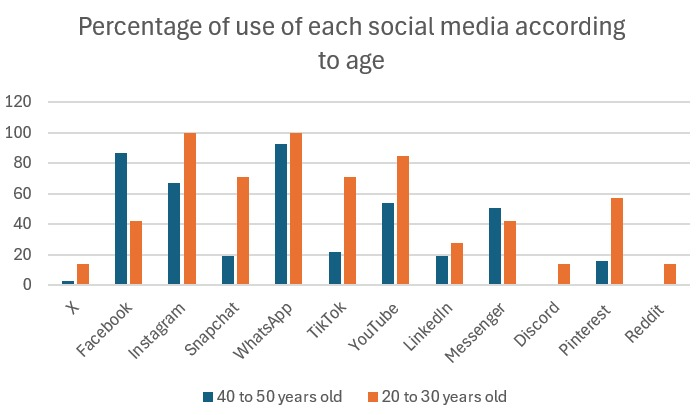
We didn't mention that much the respondents aged 30 to 40 as their results are somewhere in between. We thought it would be more interesting to compare the gap between those two subgroups who belong to two different generations. Nonetheless, we can point out that the ones aged 30 to 40 use mostly Instagram and WhatsApp, their favourite feature are messages followed by stories, posts and reels (posts are more related to the older, stories and reels to the younger) and the mostly watch entertainment and travel content.
By 50+ year-olds
In this section, we are going to study the use of social media by people aged over 50 years old (excluding people aged exactly 50 years old), more specifically their choice of social media platforms, the features used, the frequency of use, the content visualized and the date of use.
To conduct this study, we are going to rely on the data we have collected through our questionnaire, in which we received a total of 23 responses (from people aged over 50), ranging from 51 years old to 77.
Social media platforms used by people above 50 years old
According to the questionnaire results, we found that the most used social media platforms among this age range are WhatsApp by 82%, followed by Facebook by 78% and YouTube by 65%. On the other hand, the social media platforms that are not used at all by people aged over 50 are Reddit and Snapchat, and the least used platform is TikTok (1 person out of 23).
We notice that the most used social media platforms by people aged over 50 such as Facebook or YouTube, are the ones that are the least used by the younger generations. Furthermore, the least used platforms by the same age range are the ones that are the most used by the younger generations (for instance Snapchat and TikTok). We also observe a shift in the use of Instagram by people aged over 50 where Gen Y and Z are dominant. This approach validates our main hypothesis previously formulated regarding the shift in the use of social media by the older generation. A chart published by Statista Consumer Insights (conducted by Felix Richter in 2026) also confirm this shift and portrays that the most used social media platforms by Gen X and baby-boomers are mainly Facebook followed by YouTube and Instagram. This use of social media like Facebook and this shift towards the use of Instagram comes from this desire “to compensate for the lack of social activity and face-to-face interactions in their daily lives” (Sheldon, Antony, Ware; 2021)
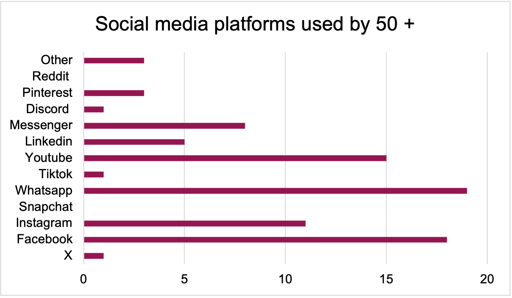
Social media features used by people 50+
Another tendency that can be observed in our questionnaire results is the fact that the most used social media features among people aged over 50 are messages by 74% and posting “posts” by 53%. On the other hand, the least used features are online shopping (with only 2 respondents) and scrolling (4 respondents out of 23). Studies like “Patterns of Social Media Use across Age Groups during the COVID-19 Pandemic: A Study across Four Countries” (Bonsaksen et al.) introduces the concepts of “active and passive social media use”. Active use of social media refers to the act of online interacting through commenting and posting, whereas passive use refers to the act of observing content without interacting, often expressed through scrolling.
This study also confirms our hypothesis formulated on the fact that Boomers and Gen X post more and scroll less than the younger generations (active use), whereas the young generations scroll more and post less (passive use): “Younger people spent more time on and were more likely to be passive users of social media than older people” (Bonsaksen et al.). The reason for such excessive use “messaging” is explained by the fact that “certain activities, such as comments on postings and messages sent to connections, result in higher social benefits” (Quinn, 2021). Therefore, the use of messaging feature on social media is explained by the argument that people aged over 50 use social media to socialize and keep in touch with their peers.
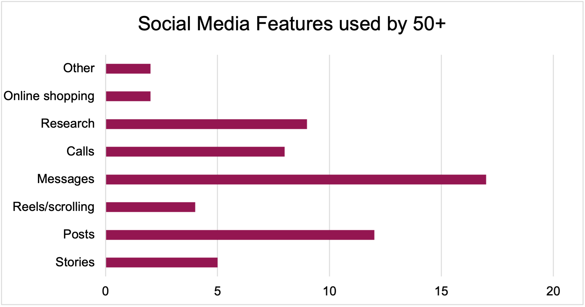
Frequency of the use of social media
People aged above 50 years have a specific frequency of using social media platforms. Indeed, 48% of our respondents declare that they regularly use social media, 35% declared using social media very often, 13% declare using them sometimes and finally 4 % declared rarely using social media platforms. Based on these results, we can clearly see that social media has become a very significant part of people’s lives, especially for people aged above 50 years.
However, social media is much more omnipresent in the younger generations’ daily lives, as the vast majority (3/4th of 14-20 year olds) claim they use social media “very often”, and almost never claim using social media on a “rarely” basis.
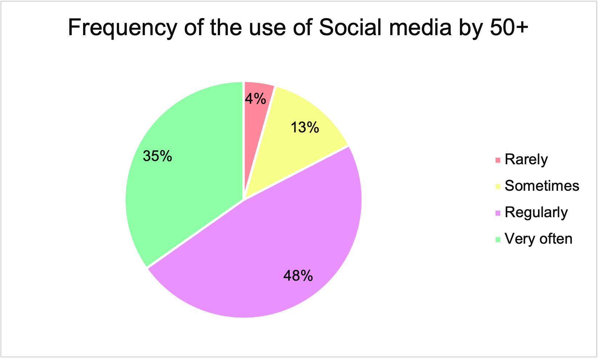
Visualized content by 50+
In terms of visualized content by people aged above 50 years, the questionnaire revealed that the most visualized content by this age range are news (69%), followed by politics (56%) and entertainment (43%). News consumption through social media is very abundant within this age range for several reasons. First, some social media are perceived as “news oriented”. Then, social media offers a diversity of opinions and is seen as “valuable news supplement”, although some might consider them as untrustworthy. Furthermore, many participants consider certain social media platforms (like Facebook which is highly used by people above 50) “as a source of local news” explains Anter, Fischer and Kümpel.
Furthermore, we also observe that the young generations (for instance 14 to 20 years old) visualize the same type of contents as the older generations. Indeed, news, politics and entertainment remain the most visualized contents for both age ranges (according to our questionnaire), which means that the young and the older generations interact to common contents, which can be possibly explained by algorithms
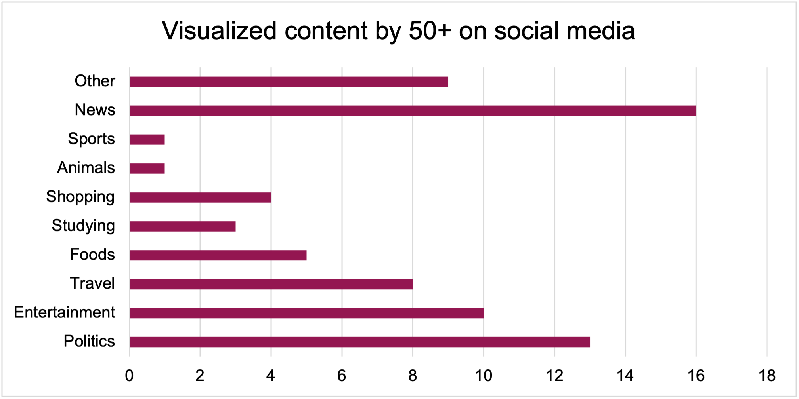
Date of use of social media
The date of use of social media platforms is surprisingly very different between the young and the old generations.
For instance, we notice that 9 people out of 23 started using social media platforms for 10 years or less, 8 people out of 23 have used social media for 10 to 20 years, and only 5 people used social media from 20 years and onwards (or since a long time). Although many people aged 50 + have used social media for a long period of time, nonetheless a small proportion have recently started using social media (4 years or 6 years).
On the other hand, the younger generations (namely 14 to 20 years old) typically started using social media since a short period of time (from 5 to 10 years), and only small proportion have used social media for more than 10 years. Therefore, the young generation and old generation have not been using social media since the same amount of time: the younger ones have recently been on them, and older generations have been using them for a longer amount of time.
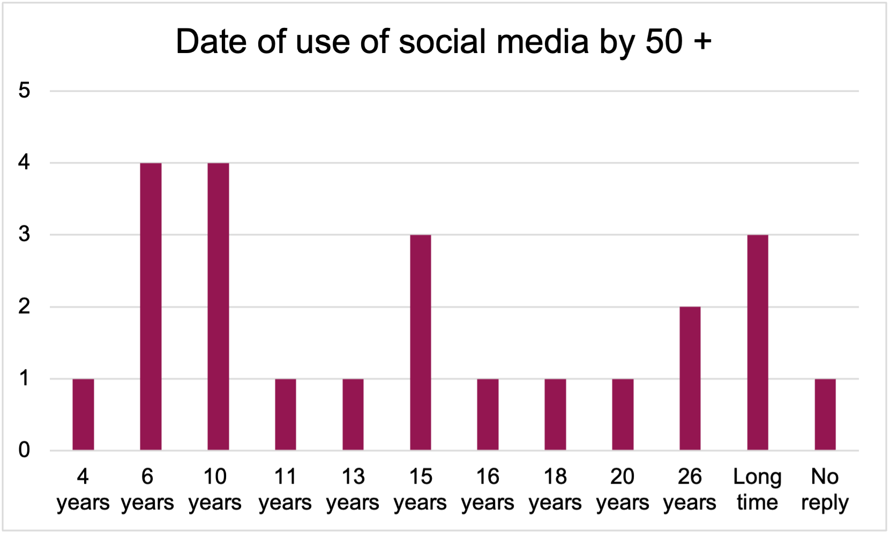
Unknown Ages
This last section is dedicated to all the respondents who have not indicated their age in the questionnaire. Consequently, these people were not integrated into our calculations and analysis.